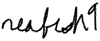

|
The future of the scenes has never been a linear progression. From amigas, to cds, to isos, the warez scene has adapted to whatever threatens or supports it. With the threat(?) of the NET act now a reality, we have to ask again where things are going, or if the warez scene will even be here a year from now. The bigger question we should be asking, and what underlies our coverage of the NET act in this issue, is what is the scene? What creates it, where does it stop, and what would it take to destroy it? Personally, when I say "scene" I mean "community." I could say "warez community" but I like "warez scene" a little more. Communities have histories, conflicts, heroes, and sub groupings. I don't think that the collection of warez sites on the web offers any of these to their audience. That's why I don't think of them as an integral part of the scene, or a scene of their own. That's also why I wouldn't be too upset if those sites, or #warez97xxx channels were to disappear. I'm not saying it would be a good thing, but I probably wouldn't do anything very forcefully to stop it. On the other hand, if emags, release group rivalries, nfos, weekly courier tops, or the buzz before a major release were threatened, I'd do everything I could to stop it. All of these would represent a loss of a community and a unique culture, one I personally enjoy a lot. Perhaps that's what scenelink is about, a kind of preemptive strike against what threatens our sense of sceneness, our sense of "community." Communites need communication. There can be no spontaneous community that develops among completely unrelated people because a community is a shared creation and a shared experience. That's why it's so great to see that groups and individuals have started to come together around scenelink. Even though there are security risks, and ones scenelink does everything in its power to minimize, the majority of groups can see that without taking the risk communication brings, there would be no scene at all. Thanks to everyone out there who's seen beyond their own groups, Ian  |